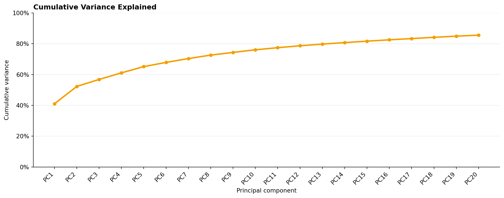
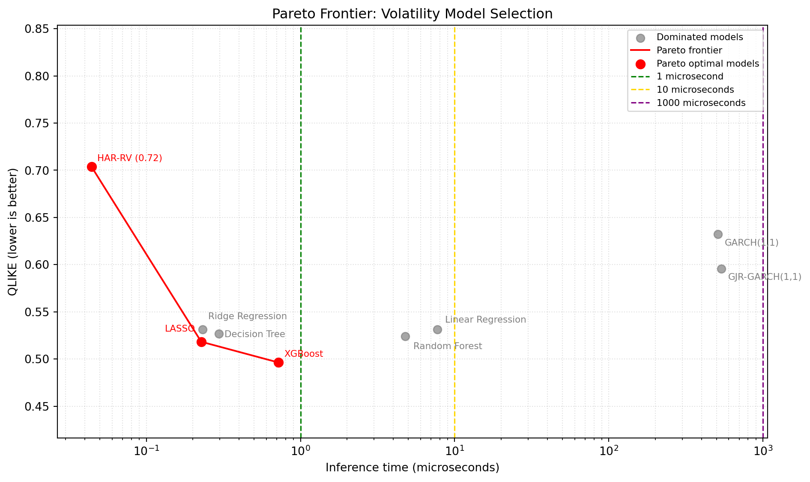

flowchart TD
A["Raw order-book data"] --> B["Preprocess prices and returns"]
B --> C["Load or compute feature cache"]
C --> D["Select models and feature mode"]
D --> E{"Model class"}
E -- "Parametric / ML" --> F["Cross validated training"]
E -- "GARCH family" --> G["Windo level volatility forecasts"]
F --> H["Predict final 30 second volatility"]
G --> H
H --> I["Evaluate accuracy and inference latency"]
I --> J["Save run artifacts"]
J --> K["Dashboard views"]
DATA3888 Group 6 - Volatility Modelling
Executive summary (~1/2 page)
Our project aims to help traders answer the question: “What is the best volatility prediction model for my goal, given latency constraints and given my desired model accuracy?”. To answer this question, we built a front end tool from the ground up, designed to help market participants who need to predict volatility across one or multiple stocks, and need to be able to choose and optimise the best volatility model for the subset of stocks they’re planning to trade. Importantly, we chose to solely focus on the dataset of 112 un-named stocks due to the higher abundance of data compared to the named stocks. Importantly, the differing lengths of data within a single time id for each dataset prompted us to have to choose a single dataset to work with, to make our analysis uniform and consistent among the two datasets. We note that by default, our tool predicts the mean volatility for the final 30s of data in each time id window, for each stock. Our results show clear separation among different loss functions, and among different stocks. We define a model as winning on a particular stock if that model produces the lowest overall loss for the most time id’s. When choosing the RMSE loss function and evaluating across all stocks in the dataset, we found the XGBoost model to perform the best among all models, with a simple decision tree and multivariate linear regression performing second and third best respectively. When choosing the QLIKE loss function, we found GJR-Garch(1,1) to significantly out-perform every other model, winning on 62 out of 112 stocks. XGBoost and regular Garch(1,1) had the second and third most wins respectively. Importantly however, we note that the both Garch models have markedly higher inference latency time, with GJR-Garch(1,1) having inference time latency of 5912 microseconds compared to XGBoost’s 0.713 microseconds. The difference in inference latency time between GJR-Garch(1,1) and XGBoost carries significant execution implications in modern electronic markets. Evidence from Aquilina et al. (2021) establishes that the competitive latency arbitrage races on exchanges possess a modal duration of just 5 to 10 microseconds. While GJR-Garch(1,1) offers superior predictive accuracy under the industry standard QLIKE loss function, its excessive latency renders it incapable of competing with other models in these microsecond windows, as the order book will clear long before a prediction can be generated, forcing traders to accept much faster models at a marginal accuracy tradeoff such as XGBoost to stay competitive. Crucially however, the superior precision of GJR-Garch(1,1) is still valuable in areas where latency is not a major consideration, such as portfolio optimisation, where accuracy takes precedence over speed. We find these core findings to be highly relevant for market makers and quantitative researchers who must regularly make the choice between minimising latency and having the models that fit the data best. As shown above, we see clear tradeoffs between model inference latency and model loss. Our tool exposes this to traders, and lets them make informed decisions that most fit their specific strategy and the universe of assets they wish to trade.
Background
Our research question is: what is the most accurate volatility prediction model for a given universe of stocks, given latency constraints?
Traders use volatility forecasting models for many reasons, including but not limited to modelling inventory risk, portfolio optimisation and value at risk VaR analysis. Depending on the application, traders, market makers and portfolio managers require tools which have different accuracy vs latency tradeoffs. For instance, a portfolio manager calculating their 1 day VaR may want the most accurate model (particularly in the tails of a given returns distribution), while a researcher creating an options pricing algorithm for a highly liquid stock may prioritise speed at the cost of some accuracy. Hence, it is highly important for market participants to choose the model that is the best fit for their given problem.
Tools like Tradingview let traders view the price over time, and introduce scripting tools which help traders visualise different functions of price, eg. rolling volatility over time (TradingView, n.d.). However, they do not introduce any way for traders to predict future volatility. In order to do this, traders currently must spend significant time to program a volatility prediction model of their choosing, create visuals for that model etc. Many traders simply want to know the accuracy of a given volatility prediction model, compared to the inference time that that model takes. Our tool innovates on the current tooling landscape by providing a no code interface, which lets traders and market participants view model latency vs model accuracy tradeoffs in a simple, intuitive manner.
We were given two datasets to work with: a dataset of 112 anonymous, no name stocks, and a dataset of 10 named stocks. Each dataset contained the top two levels of orderbook data, where prices series were split up into differing time ids. As the length of the price series within each time id were not constant between the two datasets, we ultimately chose to model the dataset of 112 anonymous stocks, due to it’s higher abundance of data, and to ensure that modelling and data constraints were consistent between stocks. This gave us a wider cross section of assets while keeping the modelling target and preprocessing assumptions consistent across the full experiment. Notably, each time id contains 600 seconds of data and the temporal ordering of each time id has not been preserved.
We introduce two different classes of models: time series models, and parametric models. The parametric models we analysed include XGBoost, multivariate linear regression, lasso, ridge regression, random forest and decision trees. The time series models we analysed include regular GARCH(1,1) and GJR-Garch(1,1).
Methods
Figure 1 summarises how data moves through preprocessing, model configuration, prediction, evaluation, and to the dashboard.
We used two separate approaches for each model class. For parametric models, we randomly assign each stock to one of five folds of data, calculate features based on the first 9 minutes and 30 seconds of data, and train each model using the 4 training folds. We then use those trained models to predict the mean variance of the final 30 seconds of data for each time id, for each stock in the single remaining out of sample fold. We then repeat this process for every stock in the dataset, such that each individual stock has one volatility prediction per model per time id, where the model was not trained on any data from that particular stock. This process effectively means we are training a single model across multiple different time ids. For our time series models, as we do not know the temporal ordering of the time ids, we trained a new model on the first 9.5 minutes of data for each time id for each stock. In inference, we then unconditionally walk each Garch model forward, predicting the point variance for each second of the final 30 seconds of data, then use those point estimates to calculate the mean variance for the final 30 seconds of each time id.
traders can select either a subset of features to use, or the top n principal components of those features.

When a time series in a particular time id was missing data, we forward filled past values such that we have a continuous series of values without any future leakage. If the time id was missing too much data, having < 20 price updates across the first 570 seconds, or having < 5 price updates in the final 30 seconds of data, we dropped that particular time id from our calculations, as to not attempt to get models to predict volatility with an inadequate amount of information.
Moreover, we faced some challenges with exploding volatility predictions from unstable Garch fits. To mitigate this, we treated Garch forecasts as missing when the fitted parameters failed the stationarity checks, when boundary parameters were at or above 0.99, or when the forecast variance path was non-finite, negative, or unreasonably large. In a similar fashion, the linear regression models would occasionally predict negative volatility, which was causing significant distortions when measuring QLIKE loss. To prevent negative volatility predictions, we clipped all predictions of negative volatility to the first percentile of training volatility for that fold. Note, this only influenced 3 out of 428,960 time ids across the data, and made the results between models directly comparable. Prior to this change, the volatility predictions for these 3 time ids accounted for approximately ~86% of total QLIKE loss, creating meaningful distortion separate from genuine model accuracy. Our changes helped prevent this distortion.
Hence, the workflow of our product is: If a results cache exists, traders can view the results from that cache without having to recompute results. Otherwise, if they wish to re-calculate their results or specify different models or model parameters, they can move onto the next step Features are pulled from the feature, or computed as soon as the front end is opened if no cache exists Principal components are calculated from those features Traders specify model(s) they want to use Traders then press run, where the platform will predict the the mean volatility for the final 30s of data for each time id for each stock Traders can then observe their data in the individual stock, and stock universe pages
Notably, we chose to include MSE, RMSE, MAE, and QLIKE loss functions in our model evaluation. QLIKE loss is both the industry standard loss metric for volatility prediction, and the main metric we used in our results, as it asymmetrically punishes under predicting volatility. This is especially important in financial applications, because underestimating market risk can lead to more serious consequences than overestimating it.
Results
‘Best’ model is subjective. Depends highly on the given loss function you want to optimise and your goal
The cached model comparison table summarises each model’s average inference latency, stock level wins under RMSE and QLIKE, and aggregate error metrics.
| Model | Mean inference (μs) | RMSE model wins | ↓ QLIKE model wins | RMSE | QLIKE | MAE | MSE | |
|---|---|---|---|---|---|---|---|---|
| 0 | XGBoost | 0.719 | 31 | 55 | 9.590 | 0.496 | 2.321 | 91.974 |
| 1 | LASSO | 0.227 | 15 | 30 | 9.397 | 0.518 | 2.329 | 88.308 |
| 2 | GJR-GARCH(1,1) | 535.147 | 9 | 22 | 11.438 | 0.596 | 2.928 | 130.825 |
| 3 | Random Forest | 4.775 | 17 | 2 | 9.606 | 0.524 | 2.373 | 92.284 |
| 4 | GARCH(1,1) | 509.158 | 12 | 2 | 11.752 | 0.632 | 2.859 | 138.121 |
| 5 | HAR-RV | 0.044 | 4 | 1 | 22.978 | 0.719 | 2.950 | 527.999 |
| 6 | Linear Regression | 7.708 | 9 | 0 | 9.391 | 0.531 | 2.330 | 88.199 |
| 7 | Ridge Regression | 0.231 | 4 | 0 | 9.392 | 0.531 | 2.330 | 88.208 |
| 8 | Decision Tree | 0.295 | 11 | 0 | 9.596 | 0.527 | 2.347 | 92.087 |
Never the less, we can see the parity frontier on the graph here (insert Vania’s pareto graph here)

We see the model which
Describe what each graph / chart shows.
We see the GJR
Discussion
Paragraph 1: Main interpretation of the results. Keep this short. The point is not to repeat the full Results section or Executive Summary, but to interpret the overall finding: there is no single best volatility model across all objectives. Include that model choice depends on the user’s metric and latency constraint. Explicitly link this back to the research question by saying the tool supports conditional model choice, rather than producing one universal ranking.
Paragraph 2: Why the loss function changes the conclusion. This is necessary because the Results section shows different winners under RMSE and QLIKE, but does not yet fully explain why that matters. Include a brief explanation that RMSE rewards average closeness, while QLIKE is more relevant for volatility and risk forecasting because under-predicting volatility can be especially costly. Avoid turning this into a formula explanation, because metric definitions belong in Methods. Avoid claiming QLIKE is always superior; instead, say it is better aligned with risk-focused volatility forecasting.
Paragraph 3: Accuracy versus latency tradeoff. This should be one of the strongest discussion paragraphs. Interpret the Pareto frontier and explain that statistical accuracy alone is not enough for model selection. Include that GJR-GARCH may be suitable for slower settings such as portfolio optimisation, VaR, or risk monitoring, while XGBoost may be more useful where inference latency is binding. Avoid overclaiming that GJR-GARCH is unusable in all trading contexts, and avoid repeating the full Aquilina et al. latency argument from the Executive Summary.
Paragraph 4: What the tool currently contributes. Include this, but keep it concise so it does not become a README-style feature list or repeat the Background section. The main claim should be that the tool operationalises the research question by making model comparison interactive across metrics, stocks, and latency. Mention only the most relevant functions: configuring models, choosing PCA or manual features, comparing universe-level and individual-stock results, and viewing latency/error tradeoffs. Avoid describing every UI element.
Paragraph 5: Limitations of the current work. This is necessary for credibility and should be specific rather than apologetic. Include only limitations that affect interpretation or external validity: static historical data rather than live order-book data, anonymous stocks so sector/liquidity context cannot be interpreted, time ids are not temporally ordered, the forecast target is limited to the final 30 seconds of each window, and latency is measured in our local/backend environment rather than production trading infrastructure. Avoid vague statements like “there are some limitations”.
Paragraph 6: Future work. This should follow directly from the limitations, not become a wishlist. Include custom model imports, live or streaming data, user-selected loss optimisation such as directly optimising QLIKE, richer model classes only if they address the modelling objective, richer named-stock data if available, and more realistic latency benchmarking. Avoid speculative features that do not connect back to the report’s findings.
Conclusion
Paragraph 1: Restate the project aim and answer the research question directly. Say that the project investigated which volatility prediction models are most appropriate for traders under different accuracy and latency requirements. The key conclusion should be that the best model is conditional on the trader’s objective, rather than universal. Avoid introducing new evidence or repeating every model result.
Paragraph 2: Summarise the main empirical finding in one tight paragraph. Include the key contrast: XGBoost performed strongly under RMSE and offered very low inference latency, while GJR-GARCH performed strongly under QLIKE but was much slower. The point is to reinforce the accuracy-latency tradeoff, not to reproduce the full Results table. Avoid adding caveats that belong in the Discussion.
Paragraph 3: Close with the contribution of the tool. Explain that the tool is useful because it makes model selection transparent across stocks, metrics, and latency constraints. It should end on the practical implication: traders and researchers can use the tool to choose models that better match their use case. Avoid overstating it as a production-ready trading system; frame it as a decision-support and model-comparison tool.
Student contributions
Eriks wrote most of the front end, back end, and first draft of the report….. Continue this.
References (use apa 7)
Aquilina, M.,Budish, E., & O’Neill, P. (2021). Quantifying the high frequency trading “arms race” (BIS Working Paper No. 955). Bank for International Settlements. https://www.bis.org/publ/work955.pdf
TradingView. (n.d.). Visuals overview. Pine Script documentation. https://www.tradingview.com/pine-script-docs/visuals/overview/